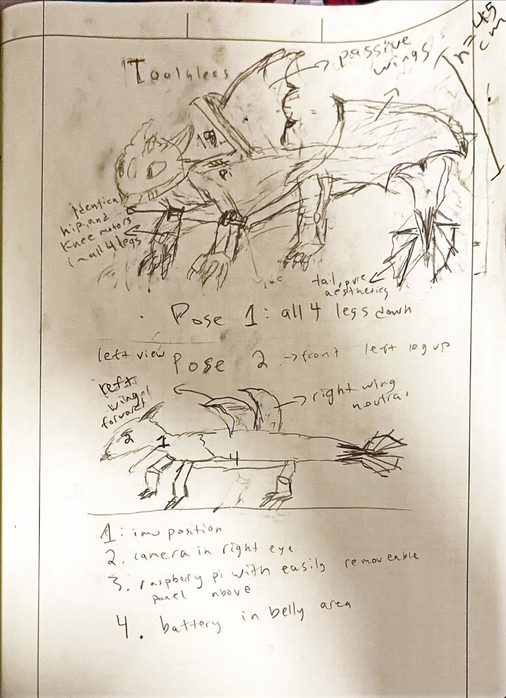
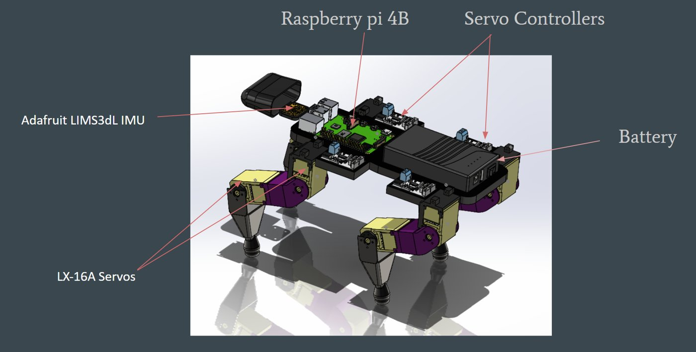
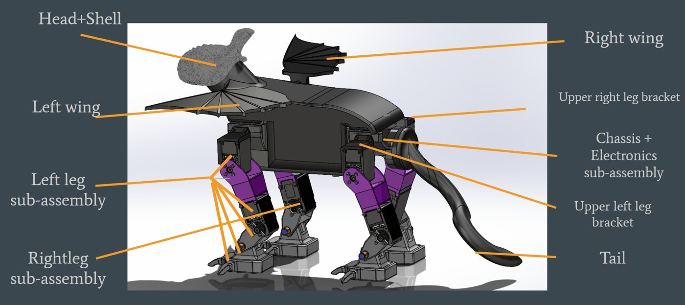
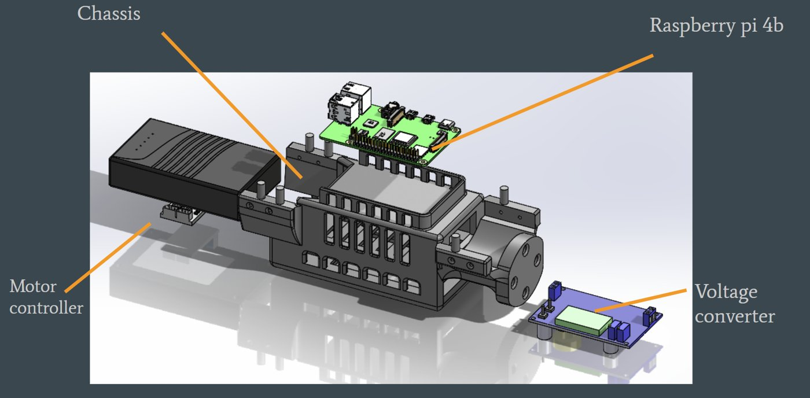
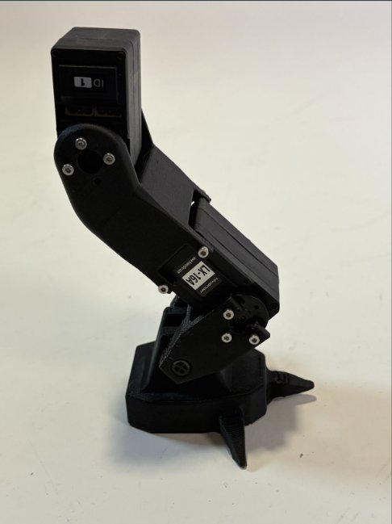
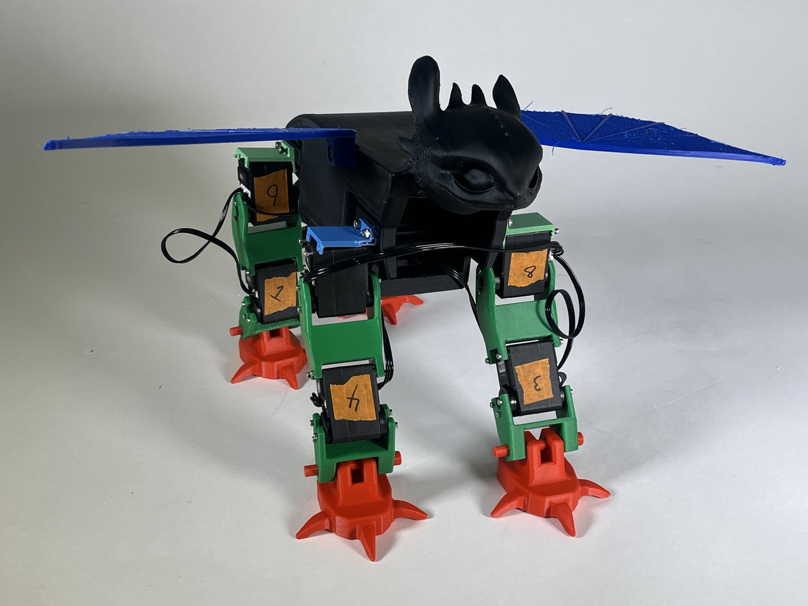
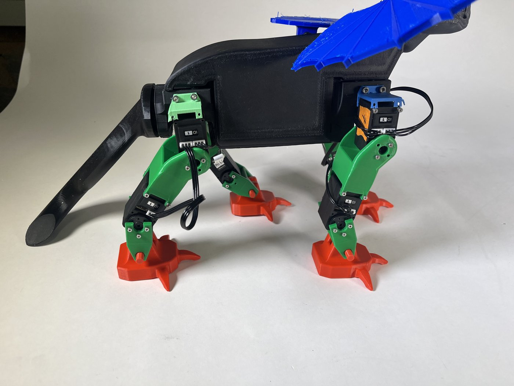
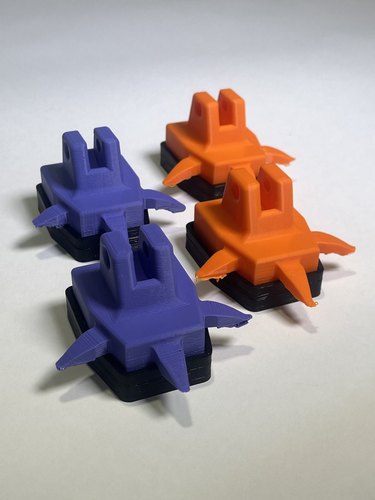

Project Summary — Toothless
Design and create a multi-pedal, walking robot given a kit of 8 high-torque servos and a Raspberry Pi. In order to accomplish our goal, we had to design around our kit. What started out as sketches slowly transformed into a functioning, physical robot.
Sketching

Inspired by the character Toothless from How to Train Your Dragon, the preliminary sketch of our bot imagined how we could integrate servos and our other electronics into a functional design. The initial idea was to have 2 servos per leg, and to contain the remaining electronics inside of the body.
Originally, there were hopes to have other complex movements incorporated into the design, such as flappable wings. Unfortunately, due to the restricted number of motors, this feature will have to be implemented in future iterations.
Preliminary Design

The first iteration of the bot design provided a general structure for the sizing and placement of different components, which was the main goal of this preliminary CAD.
Secondary Design

The secondary design saw structural improvements and organization compared to the first design. In this iteration, we introduced a more realistic leg design, feet with larger surface area, and a case with decorative features to enclose our bot. The chassis, as seen below, was designed with organization in mind. Each area of the chassis houses a different piece of electrical hardware.

First Leg
After completing our CAD, we wanted to test our leg design independently, as the whole success of the bot depended on it. We 3D printed our leg brackets and assembled the first leg. Testing for structural integrity of the brackets and extreme positions of the leg as a whole, we confirmed that we would move forward with our leg design.

First assembled leg.
Leg motion testing.
Assembling the Bot
Time-lapse of the first assembly.
After completing the first full design, we began 3D printing all of our components. The assembly came together rather seamlessly as the legs were constructed and fixed to the chassis. The major notes from this initial design were concerned with testing the strength of some components, as well as the flow of our electronic organization. As we expected, this first assembly would not be our final design.

Front view of completed assembly.

Side view of completed assembly.
Baby Steps
Robot moving at 15X speed.
With the first fully assembled version of our bot, it was time to test the movement capability. We programmed our first successful gait, which had the bot moving 1 leg at a time. Even with this non-optimal gait, we saw forward motion! The result was a somewhat slow bot with a speed of approximately 0.605 cm/s in a not-so-straight path of motion.
Through our preliminary motion testing, we were able to test the structural elements of our bot. Unfortunately, some components needed an upgrade. The main issue was the bracket connecting the leg to the chassis. After stress testing, the brackets kept snapping. Additionally, we wanted to improve our electronics housing.
Robot moving in real time.
Gait Testing
An earlier walking attempt with our final gait.
A later walking attempt with our final gait.
After our redesign, which proved effective in ensuring that no parts snapped, we proceeded to our final gait. Toothless walks by alternating which legs it's moving in each step, leveraging its ability to balance on only 2 legs. Lifting 2 opposite legs at once (front left and back right / front right and back left) and taking a step, our bot is able to propel itself forward. Originally, the feet of our bot were slipping since they were just PLA, so we added rubber bands to provide some grip. We do have a TPU version of the foot that is yet to be tested. Overall, the stability of our bot enabled it, eventually, to walk in a straight path with a speed of about 1.5 cm/s. While it may be slower than some other bots, its balance and consistency prove our bot worthy of calling itself a successful quadruped robot.
The Final Test
To prove our bot's ability, we participated in a race with other quadrupeds, after which we can proudly claim a 3rd place title. As seen in the video, the race for 3rd was similar to the turtle and the hare, but, ultimately, the balance and reliability of our bot, like the turtle, pushed it forward.
Future Modifications

The TPU version of the feet.
If we had more time, we would further optimize the gait of our robot. It has lots of potential, and we would like to see it go a bit faster. For physical alterations, we would use TPU feet to see if they help improve grip.
Additionally, it would be cool to introduce more motors into the design to flap the wings or tail. Getting longer cables or shortening our chassis to better cover wires might also be an improvement.
All in all, our bot's not perfect, but it works. We set out to create a functioning quadruped, and we've done just that. The nice thing about its imperfection is that there's plenty of room for future improvement.